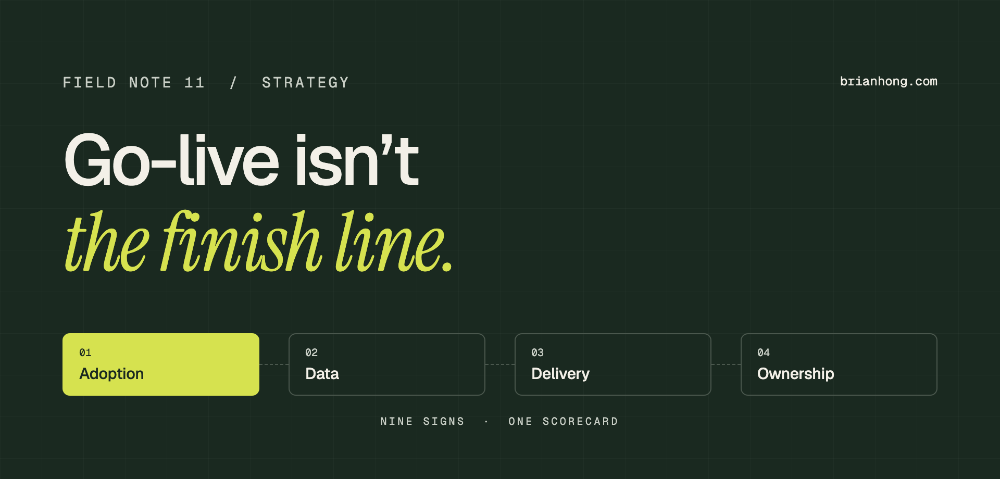

How to tell if your Salesforce implementation is failing
Failing implementations rarely crash. They go quiet, and the work moves back into spreadsheets.

I spent seven years on Salesforce’s own internal IT team. A large part of that job was leading M&A transitions: moving newly acquired companies onto an org that more than 60,000 employees already used. The lesson I took from it is the one I still build every engagement around. A migration succeeds or fails on adoption, not architecture. Go-live tells you the build is finished. It doesn’t tell you whether it worked.
The short answer: a Salesforce implementation is failing when people do their real work somewhere else and leadership doesn’t trust the numbers that come out of it. The clearest signs are shadow spreadsheets, falling logins, a forecast nobody believes, empty key fields, a backlog that only grows, and nobody inside the company who owns the org. You can measure most of them in an afternoon.
I’ve spent 12 years in Salesforce orgs from 200 users to more than 60,000, as an in-house admin and as a consultant. Most of my current work is paying down technical debt and resolving Flow errors in orgs that have been live for years. This note covers the nine signs I look for, how to check each one in your own org, a scorecard, and how to decide between fixing, rescuing, and starting over.
What a failing Salesforce implementation looks like
A failing Salesforce implementation is one that is live but isn’t producing the outcome it was bought for. The system works, users can log in, and the project was signed off. But the business still runs on spreadsheets, email, and exports, and leaders can’t rely on what Salesforce reports.
That’s why failure is easy to miss. Nothing crashes, and nobody sends an alert. Usage drifts down and the workarounds multiply. A year later someone asks why the company pays for licenses it barely uses. It helps to separate three states that get lumped together:
- Unfinished Scope was cut to hit the launch date and phase two never arrived. People use what exists and keep asking for the rest. You finish this. You don’t rescue it.
- Messy The org works and people rely on it, but it carries years of unused fields, overlapping automation, and permission sprawl. That is technical debt, and a tech debt audit is the right tool.
- Failing People have stopped relying on it. Adoption and trust are both falling, and each quarter more work moves outside the system. This is the state the rest of this note is about.
The distinction matters because the fixes are different. An unfinished org needs delivery. A messy org needs cleanup. A failing org needs someone to find out why people left before anything else gets built.
Nine signs your Salesforce implementation is failing
These are the nine signs I look for, roughly in the order they show up. The first five are about adoption and data. The last four are about delivery and ownership.
- 1. Real work happens in spreadsheets Reps keep their pipeline in a sheet and update Salesforce on Friday because a manager asks. Salesforce has become a reporting chore, not the place work gets done.
- 2. Logins and updates are falling Usage peaks at launch and declines every month after. Or people still log in but create and edit almost nothing.
- 3. Nobody trusts the forecast Leadership asks for an export and rebuilds the number by hand. Open opportunities sit with close dates in the past and stages nobody has updated.
- 4. Key fields are empty or wrong The fields leadership reports on are blank, defaulted, or filled with whatever got past the validation rule. Duplicates pile up because nobody owns the data.
- 5. Reports contradict each other Two dashboards show different numbers for the same metric, and meetings get spent arguing about which one is right.
- 6. The backlog only grows Requests wait weeks or months. Eventually users stop asking, which looks like calm and is really the moment they gave up.
- 7. Automation breaks and nobody is told Users hit errors when they save a record. Flow error emails go to a mailbox nobody reads, or to someone who left the company.
- 8. Every change breaks something else Changes go straight into production with no sandbox testing and no release notes. Each fix causes the next problem.
- 9. Nobody inside the company owns it The implementation partner has gone, and no named person decides priorities, says no to requests, or answers for the result.
One of these on its own is normal. Every org has a few. Three or more at once, and getting worse from one quarter to the next, is an implementation that is failing.
“Users rarely tell you an implementation is failing. They just stop using it and open a spreadsheet.”
How to check each sign in your own org
You can check most of these signs with standard reports and Setup pages, without buying a tool. Start with usage, then data, then how changes get made. The red flags below are the rules of thumb I use. They aren’t Salesforce benchmarks.
| Sign | Where to look | Red flag |
|---|---|---|
| Logins | Lightning Usage App for daily and monthly active users, plus a Users report on Last Login | More than 20% of licensed users haven’t logged in for 30 days |
| Real usage | Reports on opportunities, activities, and cases created or edited per user in the last 30 days | People who log in but create or edit almost nothing |
| Forecast | Open opportunities with a close date in the past, and open opportunities with no activity in 30 days | More than 10% of open pipeline has a past close date |
| Key fields | A report on the ten fields leadership actually reports on, showing blank vs. filled | Any of them under 80% filled |
| Conflicting reports | The reports behind your two most-used dashboards, compared filter by filter | The same metric defined two different ways |
| Backlog | Your request queue or ticketing tool | Median request age over 30 days and rising |
| Automation | Paused and Failed Flow Interviews in Setup, and who receives Flow error emails in Process Automation Settings | The same error every week, or errors sent to someone who left |
| Change control | Setup Audit Trail, which lists setup changes from the last 180 days | Changes made in production with no matching request |
| Ownership | Ask three leaders who owns Salesforce | Three different answers, or none |
Salesforce’s own guidance lines up with this. The Trailhead unit Measure Salesforce Usage recommends tracking the login rate over the last seven days, records created in the last 30, and who is not logging in and why, and reviewing the numbers at least once a month. The Lightning Usage App is free and already in your org: open the App Launcher and search for Usage.
Two cautions. Login rate is the weakest measure here, because someone can log in every day and do nothing. Always pair it with records created and edited. And the trend matters more than the number. An org at 70% and climbing is in better shape than one at 85% and falling.
Signs of trouble before go-live
Before go-live, a Salesforce implementation is in trouble when dates slip without a change in scope, the people who will use the system haven’t seen it, and testing or data migration is being squeezed to protect the launch date. These are the easiest problems to fix and the ones most often waved through.
- Users haven’t touched it Demos have gone to sponsors and managers only. The first time a rep sees their new screen is in training, a week before launch.
- Requirements came from one level The design reflects how leadership thinks the process works. Nobody sat with the people who do it every day.
- UAT is being shortened Testing gets cut from two weeks to three days to hold the date, and defects are deferred to after launch.
- No data migration dry run Old data will be loaded for the first time during cutover weekend. Duplicates and bad mappings will be found by users.
- Hours are burning faster than scope Most of the budget is spent and half the build remains, and nobody has reset the plan.
- No plan for the day after Training is a single session, there’s no support channel, and nobody has been named to own the org once the partner leaves.
If you see three of these, slow down. Moving a launch by two weeks is uncomfortable. Relaunching a system people have already written off is much harder, because the second time you’re asking them to trust something that already let them down.
Why Salesforce implementations fail
Salesforce implementations usually fail for reasons that have little to do with Salesforce. The common causes are no clear business outcome, no executive sponsor, processes that were never agreed before they were automated, poorly migrated data, too much customization too early, and nobody who owns the org after go-live.
The numbers are sobering. Writing in Harvard Business Review, Scott Edinger noted that CIO magazine put the CRM project failure rate at around one-third, averaged across analyst reports that ranged from 18% to 69%. When he asked executives whether their CRM was helping the business grow, he put the failure rate closer to 90%. The gap between those two figures is the point of this note. A project can be delivered on time and still fail the business.
- No measurable goal The project was to “implement Salesforce.” Nobody wrote down what should be faster, cheaper, or more visible afterward, so nobody can say whether it worked.
- No executive sponsor Leadership approved the budget and stepped back. When managers don’t run their meetings from Salesforce, reps learn it’s optional.
- The process was never agreed Sales, marketing, and finance each described a different process, and the build tried to serve all three. Automating a disagreement doesn’t settle it.
- Bad data on day one Old records were loaded without cleanup. Users found duplicates and wrong owners in the first week and decided the system couldn’t be trusted.
- Too much customization too early Every request became a field, a Flow, or code before anyone had used the standard features. The org got hard to change before it got useful.
- No owner after go-live The partner delivered and left. Nobody inside the company was given the time, the authority, or the budget to keep it working.
In my experience the last cause sits underneath most of the others. An org with a real owner recovers from a weak launch, because someone notices the spreadsheet coming back and asks why. An org without one drifts, however good the original build was. That owner might be an admin, a manager, or eventually a Center of Excellence. It has to be somebody.
“Go-live tells you the build is finished. It doesn’t tell you whether it worked.”
A Salesforce implementation health scorecard
To turn a feeling into a number, score the org from 0 to 2 in eight areas. A total of 12 or more is healthy, 7 to 11 is at risk, and 6 or less is failing. It takes about an hour and gives leadership something concrete to react to.
| Area | 0 points | 1 point | 2 points |
|---|---|---|---|
| Adoption | Work happens outside Salesforce | Used because managers insist | Daily work happens in it |
| Data | Key fields mostly blank or wrong | Reliable on some objects | Key fields complete and trusted |
| Reporting | Leaders rebuild numbers in spreadsheets | Dashboards used with caveats | Decisions made from dashboards |
| Automation | Errors every week, nobody alerted | Errors fixed after users complain | Errors monitored and rare |
| Delivery | Requests wait months | Urgent work ships, the roadmap doesn’t | A predictable release rhythm |
| Change control | Changes made in production | Sandbox used for big changes | Every change tested and documented |
| Ownership | No named owner | An admin with no authority | An owner with a sponsor and a roadmap |
| Outcomes | No goals were set, or none were met | Some goals met | Goals met and still measured |
Have three people score it separately: an executive, a front-line manager, and someone who uses Salesforce all day. The gap between their scores is a finding in itself. When the executive scores 13 and the daily user scores 5, leadership is looking at a different system than the one people work in.
The bands are mine, and they’re deliberately rough. Use the score to start a conversation and to measure again in 90 days. A score is only useful if you can watch it move.
Fix, rescue, or reimplement?
Most failing Salesforce implementations should be fixed in place, not rebuilt. Fix when the data model is sound and the problems are adoption, data, and backlog. Run a rescue when automation and ownership have broken down. Reimplement only when the data model itself doesn’t match how the business works.
| Option | When it fits | What it involves | Rough timeline |
|---|---|---|---|
| Fix in place | Score of 7 to 11. The structure is sound, but usage and data have slipped. | Name an owner, clean up key data, simplify screens, retrain by role | 1 to 3 months |
| Rescue | Score of 6 or less. Automation is unreliable and nobody owns the org. | An assessment, a freeze on new work, stabilization, then a keep, fix, rebuild, or retire decision for each component | 3 to 6 months |
| Reimplement | The data model doesn’t fit the business, or the customization can’t be maintained. | A new design, a migration, and a second launch | 6 to 12 months |
Starting over is tempting because a new org feels like a clean slate. But a new org built with the same missing owner, the same unagreed process, and the same data will fail the same way, and it will cost a second implementation to find that out. Before anyone proposes a rebuild, ask what would be different this time besides the build.
Reimplementation is the right call in a few cases. The core objects were modeled for a business you no longer are. Several orgs were merged after acquisitions and their models conflict. Or there’s more custom code and automation than anyone on staff can explain. When so much of the org has to be replaced that there’s little left to keep, a new build is the cheaper path.
A 30-60-90 day recovery plan
A recovery works in three stages: stabilize the org, fix what users feel every day, and then rebuild trust in the numbers. Do them in that order. Trust in reporting can’t come back while the screens are painful and the automation is throwing errors.
- Days 1–30: Diagnose and stabilize Score the org and run the checks above. Name one internal owner. Fix the automation errors users hit most, route error emails to someone who reads them, and stop making changes directly in production.
- Days 31–60: Fix what users feel Sit with five to ten users and watch them work. Remove fields nobody needs, cut clicks from the most common tasks, clear the top five complaints, and retrain by role instead of by feature.
- Days 61–90: Rebuild trust in the numbers Agree on definitions for the metrics leadership uses. Clean the fields behind them, publish one forecast dashboard, and have leaders run their meetings from it. Report adoption every month.
Tell users what you fixed. People come back to a system when they see their own complaints acted on, and that does more for adoption than another training session. Keeping the data clean after day 90 is a habit, and data stewardship covers how to build it.
When to bring in outside help
Bring in outside help when nobody on staff has the time or the distance to run the diagnosis, when the scorecard lands at 6 or less, or when the people who built the org are the ones being asked to judge it. An outside reviewer has no attachment to past decisions.
Ask for a time-boxed assessment with written findings, not an open-ended retainer. You want a scored list of what’s wrong, a recommendation to fix, rescue, or reimplement, and a plan your own team can carry out. Whoever does the work, the handover should go to an internal owner. Which kind of help fits depends on the work, and I’ve compared the options in Salesforce consultant vs. admin vs. managed services. The consulting FAQ covers how engagements usually run.
If you’re not sure where your org stands, start with the scorecard. It costs an hour, and it will tell you whether you have an unfinished project, a messy org, or an implementation that’s failing.
Frequently asked questions
What are the signs a Salesforce implementation is failing?
The clearest signs are reps keeping their pipeline in spreadsheets, logins and record updates falling after launch, a forecast leadership rebuilds by hand, empty or wrong key fields, reports that contradict each other, a request backlog that only grows, automation errors nobody is alerted to, changes that break other things, and no internal owner. Three or more at once, and getting worse, means the implementation is failing.
Why do Salesforce implementations fail?
Most Salesforce implementations fail for reasons outside the software: no measurable business goal, no executive sponsor, processes that were never agreed before they were automated, poor data migration, too much customization too early, and nobody who owns the org after go-live. The platform usually works. The ownership, the process, and the adoption plan are what’s missing.
What percentage of CRM implementations fail?
Estimates vary widely. Writing in Harvard Business Review, Scott Edinger noted that CIO magazine put the figure at around one-third of CRM projects, averaged across analyst reports that ranged from 18% to 69%. When he asked executives whether their CRM was helping the business grow, he put the failure rate closer to 90%.
How do you measure Salesforce user adoption?
Measure three things: usage, data quality, and business results. Usage is logins plus records created and edited per user, which you can see in the Lightning Usage App and in standard reports. Data quality is how complete your key fields are. Business results are the outcomes the project was meant to improve. Review them at least once a month.
Can a failed Salesforce implementation be fixed?
Yes, in most cases without rebuilding. If the data model fits how the business works, the fix is ownership, cleanup, and adoption: name an internal owner, stabilize the automation, remove what users don’t need, and repair the data leadership reports on. A structured recovery usually takes three to six months.
Should we start over with a new Salesforce org?
Usually not. Reimplementing makes sense only when the data model itself doesn’t match how the business operates, or when custom code and automation are so tangled that nobody can maintain them. A new org built with the same missing owner, the same unagreed process, and the same data will fail the same way.
How long after go-live should Salesforce show results?
As a rule of thumb, usage should settle into a steady pattern within the first 30 to 60 days, and the outcomes the project was meant to deliver should be visible within two quarters. If adoption is still falling 90 days after go-live, treat it as a warning sign and not a slow start.